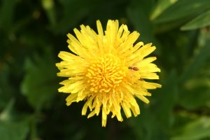
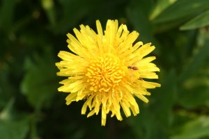
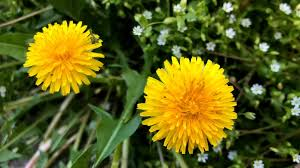

.jpg) 

Taraxacum officinale, the dandelion or common dandelion,[5] is a herbaceous perennial flowering plant in the daisy family Asteraceae (syn. Compositae). The common dandelion is well known for its yellow flower heads that turn into round balls of many silver-tufted fruits that disperse in the wind. These balls are called "clocks" in both British and American English.[6][7][8][9] The name "blowball" is also used.[10] The common dandelion grows in temperate regions of the world in areas with moist soils. It is most often considered a weed, especially in lawns and along roadsides, but the leaves, flowers, and roots are sometimes used in herbal medicine and as food. Description Dandelion clocks showing among the grass Taraxacum officinale grows from (generally unbranched) taproots and produces several hollow, leafless flower stems[11]: 470 that are typically 5–40 centimetres (2–15+3⁄4 inches) tall, but sometimes up to 70 cm (28 in) tall. The stems can be tinted purplish, they are upright or lax, and produce flower heads that are held as tall or taller than the foliage. The foliage may be upright-growing or horizontally spreading; the leaves have petioles that are either unwinged or narrowly winged. The stems can be glabrous or sparsely covered with short hairs. Plants have milky latex and the leaves are all basal; each flowering stem lacks bracts and has one single flower head. The yellow flower heads lack receptacle bracts and all the flowers, which are called florets, are ligulate and bisexual. In many lineages, fruits are mostly produced by apomixis,[12] notwithstanding the flowers are visited by many types of insects.[13] The leaves are 5–45 cm (2–17+3⁄4 in) long and 1–10 cm (1⁄2–4 in) wide, and are oblanceolate, oblong, or obovate in shape, with the bases gradually narrowing to the petiole. The leaf margins are typically shallowly lobed to deeply lobed and often lacerate or toothed with sharp or dull teeth.[12] The calyculi (the cuplike bracts that hold the florets) are composed of 12 to 18 segments: each segment is reflexed and sometimes glaucous. The lanceolate shaped bractlets are in two series, with the apices acuminate in shape. The 14–25 millimetres (1⁄2–1 in) wide involucres are green to dark green or brownish-green, with the tips dark gray or purplish. The florets number 40 to over 100 per head, having corollas that are yellow or orange-yellow in color. The fruits, called cypselae,[14] range in color from olive-green or olive-brown to straw-colored to grayish, they are oblanceoloid in shape and 2–3 mm (1⁄16–1⁄8 in) long with slender beaks. The fruits have 4 to 12 ribs that have sharp edges. The silky pappi, which form the parachutes, are white to silver-white in color and around 6 mm wide. Plants typically have 24 or 40 pairs of chromosomes, while some have 16 o
Taraxacum officinale, the dandelion or common dandelion, is a herbaceous perennial flowering plant in the daisy family Asteraceae. The common dandelion is well known for its yellow flower heads that turn into round balls of many silver-tufted fruits that disperse in the wind.
Scientific name: Taraxacum officinale
Order: Asterales
Family: Asteraceae
Kingdom: Plantae